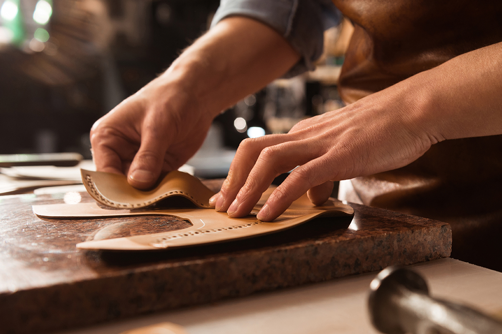

Matériaux Nobles
Cuirs pleine fleur italiens, veau velours soyeux et doublures respirantes. La qualité se sent au toucher.
Découvrez notre nouvelle collection alliant artisanat traditionnel et confort moderne. Trouvez la paire qui vous accompagnera partout.
Voir la CollectionDepuis trois générations, "L'Atelier du Pas" perpétue la tradition de la botterie fine. Dans nos ateliers, chaque geste compte. Nous sélectionnons nos peausseries avec la plus grande rigueur, privilégiant des tanneries respectueuses de l'environnement.
Notre philosophie est simple : une chaussure ne doit pas seulement être belle, elle doit être une extension de vous-même. C'est pourquoi nous passons des heures à perfectionner nos chaussants pour un confort inégalé dès le premier essayage.

Cuirs pleine fleur italiens, veau velours soyeux et doublures respirantes. La qualité se sent au toucher.
Semelles intérieures à mémoire de forme et construction souple pour marcher toute la journée sans fatigue.
Des lignes épurées qui traversent les modes. L'équilibre parfait entre classicisme et modernité.